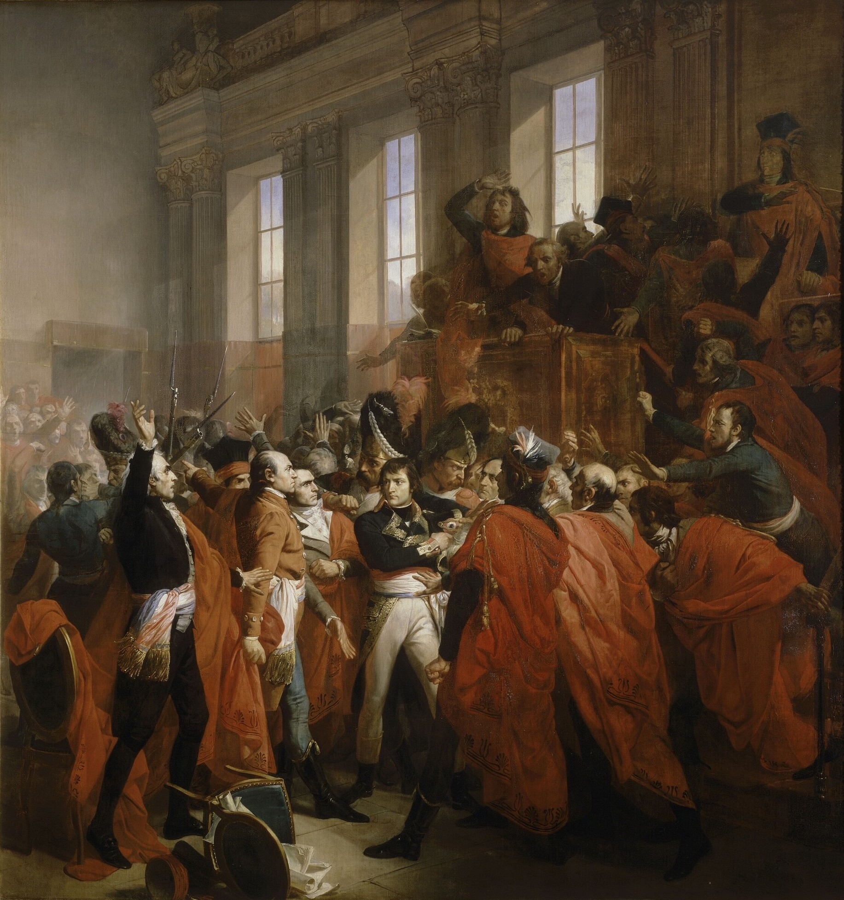
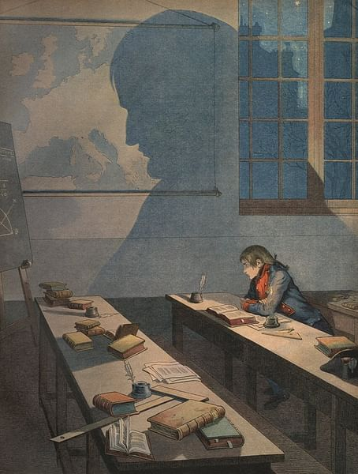
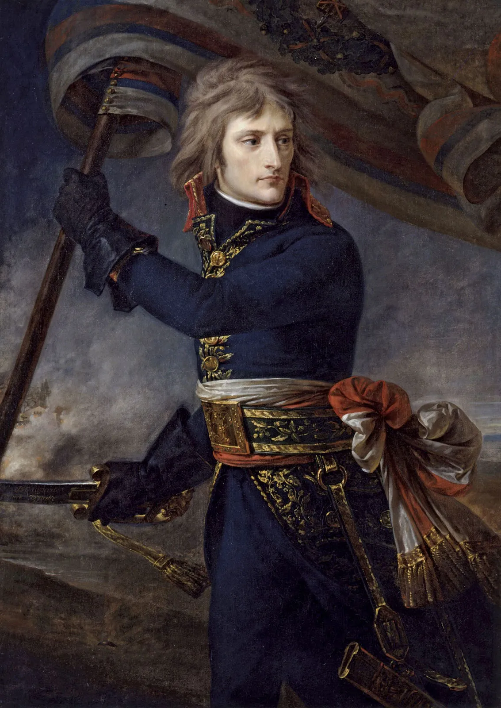
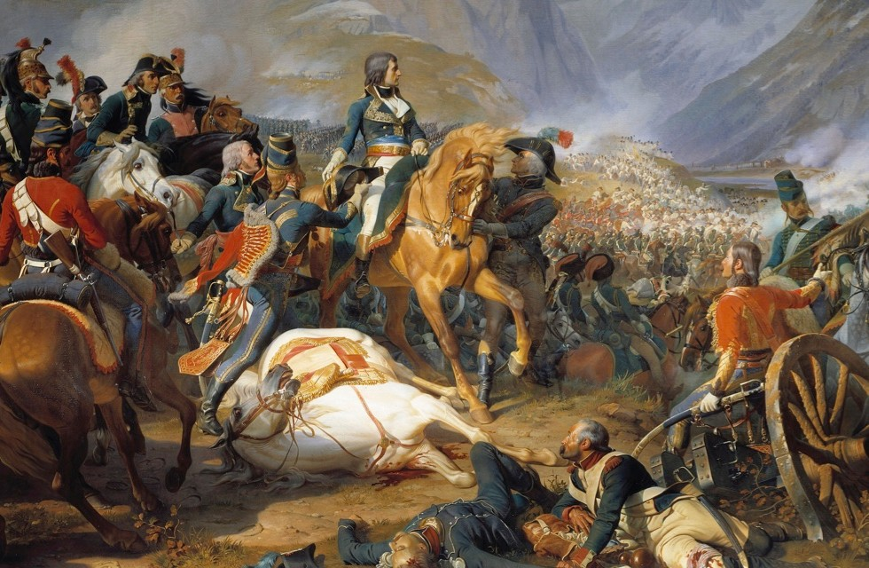
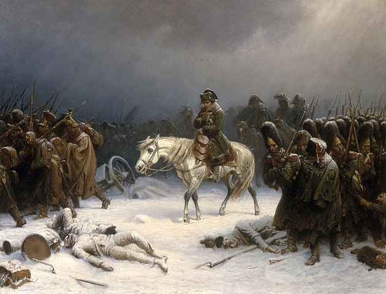
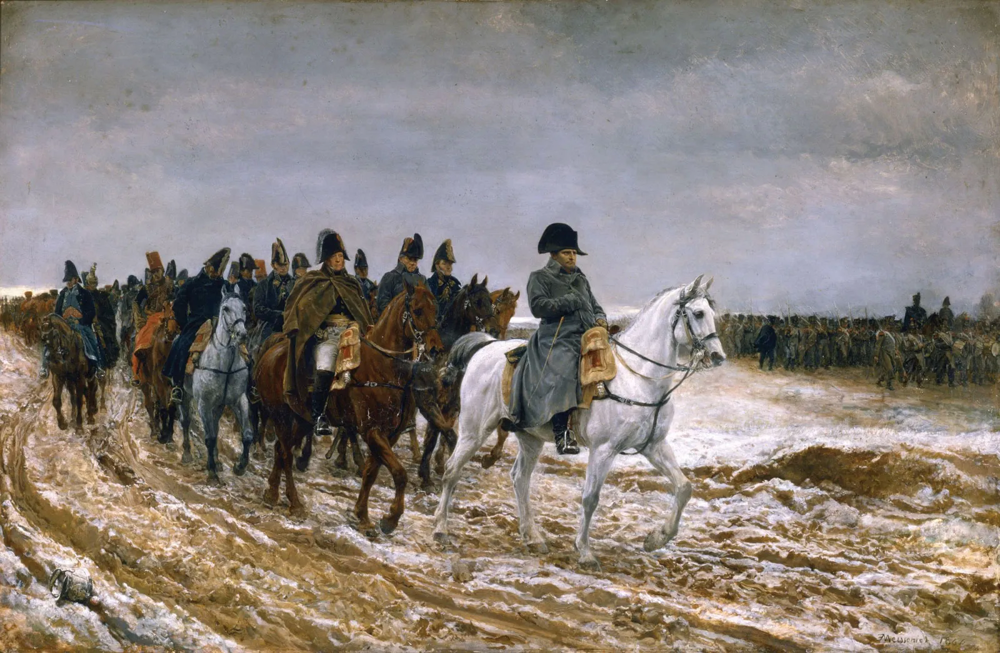
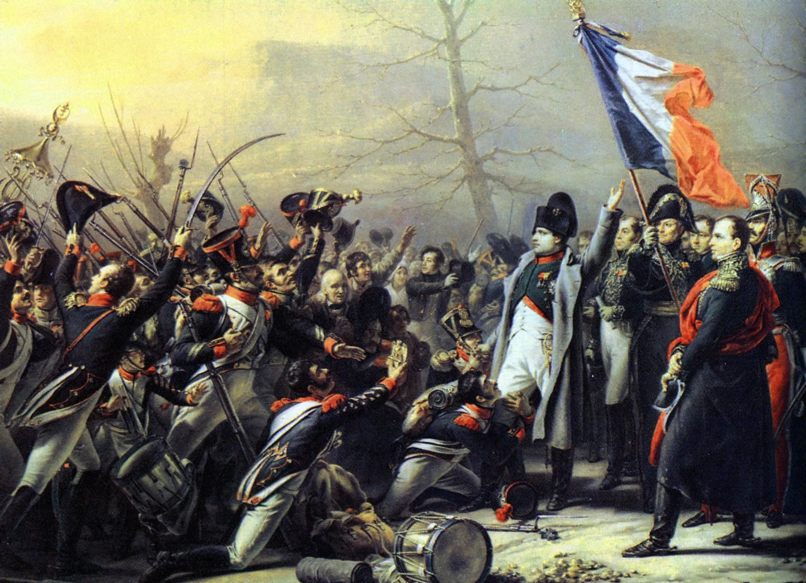
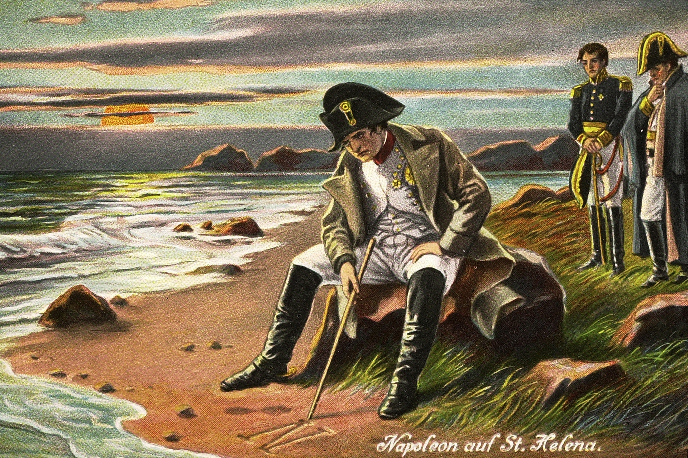

Summary
The Napoleonic era is a period in the history of France and Europe. It is generally classified as including the fourth and final stage of the French Revolution, the first being the National Assembly, the second being the Legislative Assembly, and the third being the Directory. The Napoleonic era begins roughly with Napoleon Bonaparte's coup d'état, overthrowing the Directory (9 November 1799), establishing the French Consulate, and ends during the Hundred Days and his defeat at the Battle of Waterloo (18 June 1815). The Congress of Vienna soon set out to restore Europe to pre-French Revolution days. Napoleon brought political stability to a land torn by revolution and war. He made peace with the Roman Catholic Church and reversed the most radical religious policies of the Convention. In 1804 Napoleon promulgated the Civil Code, a revised body of civil law, which also helped stabilize French society. The Civil Code affirmed the political and legal equality of all adult men and established a merit-based society in which individuals advanced in education and employment because of talent rather than birth or social standing. The Civil Code confirmed many of the moderate revolutionary policies of the National Assembly but retracted measures passed by the more radical Convention. The code restored patriarchal authority in the family, for example, by making women and children subservient to male heads of households. Whilst working to stabilise France, Napoleon also sought to extend his authority throughout Europe. Napoleon's armies conquered the Iberian and Italian peninsulas, occupied lands, and he forced Austria, Prussia, and Russia to ally with him and respect French hegemony in Europe. The United Kingdom refused to recognise French hegemony and continued the war throughout. The First French Empire began to unravel in 1812, when he decided to invade Russia. Napoleon underestimated the difficulties his army would have to face whilst occupying Russia. Convinced that the Tsar was conspiring with his British enemies, Napoleon led an army of 600,000 soldiers to Moscow. He defeated the Russian army at Borodino before capturing Moscow, but the Tsar withdrew and Moscow was set ablaze, leaving Napoleon's vast army without adequate shelter or supplies. Napoleon ordered a retreat, but the bitter Russian winter and repeated Russian attacks whittled down his army, and only a battered remnant of 30,000 soldiers managed to limp back to French territory. The allies then continued a united effort against Napoleon until they had seized Paris forcing his abdication in 1814. His return to power the next year was resisted by all the allies and his army was defeated by a Prussian and Anglo-Allied force at Waterloo. Napoleon was forced into exile on the island of St. Helena where he would live out the rest of his days before dying of stomach cancer on May 5, 1821.
Coup of 18 Brumaire
The Coup of 18 Brumaire was a significant event in French history that took place on November 9, 1799 (18 Brumaire in the French Republican Calendar). It marked the end of the French Revolution's radical phase and the beginning of the rise of Napoleon Bonaparte to power. During the French Revolution, the political situation in France was highly unstable, and the Directory, which was the executive government at the time, was facing numerous challenges and was widely perceived as corrupt and ineffective. Napoleon, a successful military general, saw an opportunity to seize power and restore stability to the country. On the morning of 18 Brumaire, Napoleon, along with his brother Lucien Bonaparte and a group of loyal soldiers, executed a plan to overthrow the Directory. They staged a coup d'état, taking control of key government institutions and forcing the resignation of the existing directors. As a result of the coup, a new government was established known as the Consulate, with Napoleon as the First Consul. This marked the beginning of the Napoleonic era in France. Although the Consulate was presented as a republican form of government, Napoleon held the real power and quickly consolidated his authority.
French Consulate
The French Consulate was the government of the First French Republic from 10 November 1799 to 18 May 1804, spanning the last four years of the Republic's existence. Headed by Napoleon Bonaparte (1769-1821) as First Consul, the Consulate served as a bridge between the French Revolution (1789-1799) and the First French Empire (1804-1814; 1815). During the period of the Consulate, Bonaparte consolidated his power while slowly moving in the direction of authoritarianism. He secured the support of the French populace with his victory at the Battle of Marengo (14 June 1800) and with the Peace of Amiens (25 March 1802), the latter of which ended the decade-long war between France and the United Kingdom. The period also saw the enactment of some of Bonaparte's longest-lasting political achievements, including the Concordat of 1801 and the Civil Code of the French, better known as the Napoleonic Code. By centralizing the state government and reviving many of the mechanics of France's Ancien Régime, Bonaparte undermined some of the accomplishments of the French Revolution and paved the way for his own elevation to Emperor of the French in May 1804. The judicial system was profoundly changed: whereas from the beginning of the Revolution judges had been elected, henceforth they were to be nominated by the government, their independence assured by their irremovability from office. The police organization was greatly strengthened. The financial administration was considerably improved: instead of the municipalities, special officials were entrusted with the collecting of direct taxes; the franc was stabilized; and the Banque de France, owned partly by shareholders and partly by the state, was created. Education was transformed into a major public service; secondary education was given a semimilitary organization, and the university faculties were reestablished. Primary education, however, was still neglected. Bonaparte shared Voltaire’s belief that the people needed a religion. Personally, he was indifferent to religion: in Egypt he had said that he wanted to become a Muslim. Yet he considered that religious peace had to be restored to France. As early as 1796, when he was concluding the armistice in Italy with Pope Pius VI, he had tried to persuade the pope to retract his briefs against the French priests who had accepted the Civil Constitution of the Clergy, which in practice nationalized the church. Pius VII, who succeeded Pius VI in March 1800, was more accommodating than his predecessor, and, 10 months after negotiations were opened with him, the Concordat of 1801 was signed reconciling the church and the Revolution. The pope recognized the French republic and called for the resignation of all former bishops; new prelates were to be designated by the first consul and instituted by the pope; and the sale of the property of the clergy was officially recognized by Rome. The concordat, in fact, admitted freedom of worship and the lay character of the state.
Napoleonic Code
The Napoleonic Code, also known as the Civil Code of 1804 or the Code Napoléon, was a comprehensive civil law code introduced by Napoleon Bonaparte during his time as First Consul of France. It was officially enacted on 21 March 1804 and remains one of Napoleon's most enduring and influential legacies. The main purpose of the Napoleonic Code was to create a unified and coherent legal system that replaced the complex and contradictory patchwork of laws that had developed during the French Revolution. It aimed to provide legal clarity, consistency, and certainty for all citizens of France, regardless of their social status. The code was based on the principles of equality, uniformity, and rationality. It sought to treat all citizens as equals before the law and emphasized the idea of legal rights and individual freedoms. Under the Napoleonic Code, everyone was entitled to certain fundamental rights, including the right to personal security, property, and freedom of religion. The codification of the civil law, first undertaken in 1790, was at last completed under the Consulate. The code, promulgated on March 21, 1804, and later known as the Napoleonic Code, gave permanent form to the great gains of the Revolution: individual liberty, freedom of work, freedom of conscience, the lay character of the state, and equality before the law; but, at the same time, it protected landed property, gave greater liberty to employers, and showed little concern for employees. It maintained divorce but granted only limited legal rights to women. The army received the most careful attention. The first consul retained in outline the system instituted by the Revolution: recruitment by forced conscription but with the possibility of replacement by substitutes; the mixing of the conscripts with old soldiers; and the eligibility of all for promotion to the highest ranks.

Founding the Empire
The peace settlement had brought about the life consulate; the return of war was to stimulate the formation of the empire. The British government, which would have been glad to see Bonaparte deposed or removed by assassination, renewed its subsidies to the French royalists, who resumed their agitation and plotting. When a British-financed assassination plot was uncovered in 1804, Bonaparte decided to react vigorously enough to deter his opponents from any more such attempts. The police believed that the real head of the conspiracy was the young duc d’Enghien, a scion of the royal house of Bourbon, who was residing in Germany, a few miles across the frontier. Accordingly, with the agreement of Talleyrand and the police chief Joseph Fouché, the duke was kidnapped on neutral soil and brought to Vincennes, where he was tried and shot (March 21). This action provoked a resurgence of opposition among the old aristocracy but enhanced the influence of Fouché. In the hope of consolidating his own position, Fouché now suggested to Bonaparte that the best way to discourage conspiracy would be to transform the life consulate into a hereditary empire, which, because of the fact that there would be an heir, would remove all hope of changing the regime by assassination. Bonaparte readily accepted the suggestion, and on May 18, 1804, the empire was proclaimed. Though there was little change in the organization of the government of France, Napoleon as emperor revived a number of institutions similar to those of the ancien régime. In the first place, he wanted to be consecrated by the pope himself, so that his coronation should be even more impressive than that of the kings of France. Pius VII agreed to come to Paris, and the ceremony, which seemed equally outrageous to royalists and to the old soldiers of the Revolution, took place in Notre-Dame on December 2, 1804. At the last moment, the emperor took the crown from the pope and set it on his own head himself. The imperial regime also instituted its symbols and titles. Princely titles were brought back for the members of Napoleon’s family in 1804, and an imperial nobility was created in 1808. As opposition was still lively, Napoleon intensified his propaganda and imposed an increasingly strict censorship on the press. A dictatorial regime allowed him to carry on his wars for years without worrying about French public opinion. Having been president of the Italian Republic (as the Cisalpine Republic was renamed) since January 1802, Napoleon in March 1805 was proclaimed king of Italy and crowned in Milan in May.

Napoleonic Wars Summary
The Napoleonic Wars (1803–1815) were a series of conflicts fought between the First French Empire under Napoleon (1804–1815), and a fluctuating array of European coalitions. The wars originated in political forces arising from the French Revolution (1789–1799) and from the French Revolutionary Wars (1792–1802) (the War of the First Coalition (1792–1797) and the War of the Second Coalition (1798–1802)), and produced a period of French domination over Continental Europe. There were seven Napoleonic Wars, five named after the coalitions that fought Napoleon, plus two named for their respective theatres: (i) the War of the Third Coalition (1803–1806), (ii) the War of the Fourth Coalition (1806–1807), (iii) the War of the Fifth Coalition (1809), (iv) the War of the Sixth Coalition (1813–1814), (v) the War of the Seventh Coalition (1815), (vi) the Peninsular War (1807–1814), and (vii) the French invasion of Russia (1812). Upon realising the Coup of 18 Brumaire, whereby he became the First Consul of France in 1799, Napoleon assumed control of the politically chaotic French First Republic. He then organised a financially stable French state with a strong bureaucracy and a professional army. War broke about soon after, with Britain declaring war on France on 18 May 1803, ending the Peace of Amiens, and forming a coalition made up of itself, Sweden, Russia, Naples, and Sicily. Frank McLynn argues that Britain went to war in 1803 out of a "mixture of economic motives and national neuroses – an irrational anxiety about Napoleon's motives and intentions." The British fleet under Admiral Nelson decisively crushed the joint Franco-Spanish navy in the Battle of Trafalgar in October 1805. This victory secured British control of the seas and prevented a planned invasion of Britain. In December 1805, Napoleon defeated the allied Russo-Austrian army at Austerlitz, effectively ending the Third Coalition and forcing Austria to make peace. Concerned about increasing French power, Prussia led the creation of the Fourth Coalition with Russia, Saxony, and Sweden, which resumed war in October 1806. Napoleon soon defeated the Prussians at Jena and the Russians at Friedland, bringing an uneasy peace to the continent. The treaty failed to end the tension, and war broke out again in 1809, with the badly prepared Fifth Coalition, led by Austria. At first, the Austrians won a stunning victory at Aspern-Essling, but were quickly defeated at Wagram. Hoping to isolate and weaken Britain economically through his Continental System, Napoleon launched an invasion of Portugal, the only remaining British ally in continental Europe. After occupying Lisbon in November 1807, and with the bulk of French troops present in Spain, Napoleon seized the opportunity to turn against his former ally, depose the reigning Spanish royal family and declare his brother King of Spain in 1808 as José I. The Spanish and Portuguese revolted with British support and expelled the French from Iberia in 1814 after six years of fighting. Concurrently, Russia, unwilling to bear the economic consequences of reduced trade, routinely violated the Continental System, prompting Napoleon to launch a massive invasion of Russia in 1812. The resulting campaign ended in disaster for France and the near-destruction of Napoleon's Grande Armée. Encouraged by the defeat, Austria, Prussia, Sweden, and Russia formed the Sixth Coalition and began a new campaign against France, decisively defeating Napoleon at Leipzig in October 1813 after several inconclusive engagements. The Allies then invaded France from the east, while the Peninsular War spilled over into southwestern France. Coalition troops captured Paris at the end of March 1814 and forced Napoleon to abdicate in April. He was exiled to the island of Elba, and the Bourbons were restored to power. However, Napoleon escaped in February 1815, and reassumed control of France for around one hundred days. The allies formed the Seventh Coalition, defeated him at Waterloo in June 1815, and exiled him to the island of Saint Helena, where he died six years later.[29] The Congress of Vienna redrew the borders of Europe and brought a period of relative peace. The wars had profound consequences on global history, including the spread of nationalism and liberalism, the rise of Britain as the world's foremost naval and economic power, the appearance of independence movements in Latin America and subsequent decline of the Spanish and Portuguese Empires, the fundamental reorganization of German and Italian territories into larger states, and the introduction of radically new methods of conducting warfare, as well as civil law. After the end of the Napoleonic Wars, there was a period of relative peace in continental Europe, lasting until the Crimean War in 1853.
Early Military Campaigns
The first consul spent the winter and spring of 1799–1800 reorganizing the army and preparing for an attack on Austria alone, Russia having withdrawn from the anti-French coalition. With his usual quick assessment of the situation, he saw the strategic importance of the Swiss Confederation, from which he would be free to outflank the Austrian armies either in Germany or in Italy as he might see fit. His past successes made him choose Italy. Taking his army across the Great St. Bernard Pass before the snow melted, he appeared unexpectedly behind the Austrian army besieging Genoa. The Battle of Marengo in June gave the French command of the Po valley as far as the Adige, and in December another French army defeated the Austrians in Germany. Austria was forced to sign the Treaty of Lunéville of February 1801, whereby France’s right to the natural frontiers that Julius Caesar had given to Gaul—namely, the Rhine, the Alps, and the Pyrenees—was recognized. Great Britain alone remained at war with France, but it soon tired of the struggle. Preliminaries of peace, concluded in London in October 1801, put an end to hostilities, and peace was signed at Amiens on March 27, 1802. General peace was reestablished in Europe. The first consul’s prestige increased still more, and his friends—at his suggestion—proposed that a “token of national gratitude” should be offered to him. In May 1802 it was decided that the French people should vote in referendum on the following question: “Shall Napoleon Bonaparte be consul for life?” In August an overwhelming vote granted him the prolongation of his consulate as well as the right to designate his successor. Bonaparte’s conception of international peace differed from that of the British, for whom the Treaty of Amiens represented an absolute limit beyond which they were under no circumstances prepared to go. The British even hoped to take back some of the concessions they had been forced to make. For Bonaparte, on the other hand, the Treaty of Amiens marked the starting point for a new French ascendancy. He was, first of all, intent on reserving half of Europe as a market for France without lowering customs duties—to the indignation of British merchants. To revive France’s expansion overseas, he also intended to recover Saint-Domingue (Haiti; governed from 1798 by the black leader Toussaint Louverture), to occupy Louisiana (ceded to France by Spain in 1800), perhaps to reconquer Egypt, and at any rate to extend French influence in the Mediterranean and in the Indian Ocean. In continental Europe he advanced beyond France’s natural frontiers, incorporating Piedmont into France, imposing a more centralized government on the Swiss Confederation, and in Germany compensating the princes dispossessed of territory on the Rhine under the Treaty of Lunéville with shares of the secularized ecclesiastical states. Great Britain was alarmed by this expansion of France in peacetime and found it scarcely tolerable that one state should command the coastline of the Continent from Genoa to Antwerp. The immediate occasion of Franco-British rupture, however, was the problem of Malta. According to the Treaty of Amiens, the British, who had taken the island on the collapse of the French occupation, should have restored it to the Hospitallers; but the British, on the pretext that the French had not yet evacuated certain Neapolitan ports, refused to leave the island. Franco-British relations became strained, and in May 1803 the British declared war.
War against Europe
From 1803 to 1805 Napoleon had only the British to fight; and again France could hope for victory only by landing an army in the British Isles, whereas the British could defeat Napoleon only by forming a Continental coalition against him. Napoleon began to prepare an invasion again, this time with greater conviction and on a larger scale. He gathered nearly 2,000 ships between Brest and Antwerp and concentrated his Grand Army in the camp at Boulogne (1803). Even so, the problem was the same as in 1798: to cross the Channel, the French had to have control of the sea. Still far inferior to the British navy, the French fleet needed the help of the Spanish, and even then the two fleets together could not hope to defeat more than one of the British squadrons. Spain was induced to declare war on Great Britain in December 1804, and it was decided that French and Spanish squadrons massed in the Antilles should lure a British squadron into these waters and defeat it, thus making the balance roughly equal between the Franco-Spanish navy and the British. A battle in the entrance to the Channel could then be fought with some chance of success. The plan failed. The French squadron from the Mediterranean, under Admiral Pierre de Villeneuve, found itself alone at the appointed meeting place in the Antilles. Pursued by Nelson and not daring to attack him, it turned back toward Europe and took refuge in Cádiz in July 1805; there the British blockaded it. Accused of cowardice by the angry Napoleon, Villeneuve resolved to run the blockade, with the support of a Spanish squadron; but on October 21, 1805, he was attacked by Nelson off Cape Trafalgar. Nelson was killed in the battle, but the Franco-Spanish fleet was totally destroyed. The British had won a decisive victory, which eliminated the danger of invasion and gave them freedom of movement at sea. The British had also succeeded in organizing a new anti-French coalition consisting of Austria, Russia, Sweden, and Naples. On July 24, 1805, three months before Trafalgar, Napoleon had ordered the Grand Army from Boulogne to the Danube (thus ruling out an invasion of England even if the French had won at Trafalgar). In the week preceding Trafalgar, the Grand Army won an outstanding victory over the Austrians at Ulm, and on November 13 Napoleon entered Vienna. On December 2, 1805, in his greatest victory, he defeated the combined Austrian and Russian armies in the Battle of Austerlitz, widely considered "Napoleon's masterpiece". By the Treaty of Pressburg, Austria renounced all influence in Italy and ceded Venetia and Dalmatia to Napoleon, as well as extensive territory in Germany to his protégés Bavaria, Württemberg, and Baden. The French then proceeded to dethrone the Bourbons in the Kingdom of Naples, which was bestowed on Napoleon’s brother Joseph. In July 1806 the Confederation of the Rhine was founded—soon to embrace all of western Germany in a union under French protection. In September 1806 Prussia entered the war against France, and on October 14 the Prussian armies were defeated at Jena and at Auerstädt. The Russians put up a better resistance at Eylau in February 1807 but were routed at Friedland in June. In Warsaw Napoleon fell in love with Countess Marie Walewska, a Polish patriot who hoped that Napoleon would resurrect her country. Napoleon had a son by her. The Russian emperor Alexander I could have continued the struggle, but he was tired of the alliance with the British. He met Napoleon at Tilsit, in northern Prussia near the Russian frontier. There, on a raft anchored in the middle of the Nemen River, they signed treaties that created the Grand Duchy of Warsaw from the Polish provinces detached from Prussia and, in effect, divided control of Europe between the emperors, Napoleon taking the west and Alexander the east. Alexander even made a vague promise of a land attack against the British possessions in India.
Peninsular War
As Napoleon could no longer think of invading England, he tried to induce capitulation by stifling the British economy. By closing all of Europe to British merchandise, he hoped to bring about a revolt of the British unemployed that could force the government to sue for peace. He forbade all trade with the British Isles, ordered the confiscation of all goods coming from English factories or from the British colonies, and condemned as fair prize not only every British ship but also every ship that had touched the coasts of England or its colonies. For the blockade to succeed, it had to be enforced rigorously throughout Europe. But, from the beginning, England’s old ally Portugal showed itself reluctant to comply, for the blockade would mean its commercial ruin. Napoleon decided to break down Portuguese opposition by force. Charles IV of Spain let the French troops cross his kingdom, and they occupied Lisbon; but the prolonged presence of Napoleon’s soldiers in the north of Spain led to insurrection. When Charles IV abdicated in favour of his son Ferdinand VII, Napoleon, seeing the opportunity to rid Europe of its last Bourbon rulers, summoned the Spanish royal family to Bayonne in April 1808 and obtained the abdication of both Charles and Ferdinand; they were interned in Talleyrand’s château. After the bloody suppression of an uprising in Madrid, insurrection spread across the whole country, for the Spaniards would not accept Joseph Bonaparte, king of Naples, as their new king. The subsequent defeat of his forces in Spain and Portugal were sensational blows to Napoleon’s prestige. Soon the Iberian Peninsula, up in arms, became a bridgehead on the Continent for the British. Under the energetic Arthur Wellesley (later 1st duke of Wellington), in command from 1809, the Anglo-Spanish-Portuguese forces were to achieve decisive successes. At the Congress of Erfurt (September–October 1808), a conference with Alexander I, Napoleon assembled a great concourse of princes to impress the Russian emperor in an attempt to extract promises of help. Whether impressed or not, Alexander would make no definite commitment. Alexander’s refusal, furthermore, was partly prompted by Talleyrand, who had become dismayed by Napoleon’s policies and was already negotiating with the Russian emperor behind his master’s back. By early 1809, however, with most of the Grand Army thrown into Spain, Napoleon seemed on the point of overcoming the revolt. Then, in April, Austria launched an attack in Bavaria in the hope of rousing all of Germany against the French. Napoleon once again defeated the Habsburgs (July 6) and by the Treaty of Schönbrunn (October 14, 1809) obtained the Illyrian Provinces, thus rounding out the “Continental System.”
Disaster in Russia
Since the Congress of Erfurt, the Russian emperor had shown himself less and less inclined to deal with Napoleon as a trusted partner. In the spring of 1812, therefore, Napoleon massed his forces in Poland to intimidate Alexander. After some last attempts at agreement, in late June his Grand Army—about 600,000 men, including contingents extorted from Prussia and from Austria—began to cross the Nemen River. The Russians retreated, adopting a scorched-earth policy. Napoleon’s army did not reach the approaches to Moscow until the beginning of September. The Russian commander in chief, Mikhail I. Kutuzov, engaged it at Borodino on September 7. The fight was savage, bloody, and indecisive, but a week later Napoleon entered Moscow, which the Russians had abandoned. On that same day, a huge fire broke out, destroying the greater part of the town. Moreover, Alexander unexpectedly refused to treat with Napoleon. Withdrawal was necessary, and the premature onset of winter made it disastrous. After the difficult crossing of the Berezina River in November, fewer than 10,000 men fit for combat remained with Napoleon’s main force. This catastrophe heartened all the peoples of Europe to defy Napoleon. In Germany the news unleashed an outbreak of anti-French demonstrations. The Prussian contingents deserted the Grand Army in December and turned against the French. The Austrians also withdrew their troops and adopted an increasingly hostile attitude, and in Italy the people began to turn their backs on Napoleon. Even in France, signs of discontent with the regime were becoming more frequent. In Paris a malcontent general, Claude-François de Malet, nearly succeeded in carrying out a coup d’état after announcing on October 23, 1812, that Napoleon had died in Russia. This incident was a major factor in Napoleon’s decision to hasten back to France ahead of the Grand Army. Arriving in Paris on December 18, he proceeded to stiffen the dictatorship, to raise money by various expedients, and to levy new troops. Thus, in 1813 the forces arrayed against France were no longer armies of mercenaries but were those of nations fighting for their freedom as the French had fought for theirs in 1792 and 1793; and the French themselves, for all their courage, had lost their former enthusiasm. The emperor’s ideal of conquest was no longer that of the nation. In May 1813 Napoleon won some successes against the Russians and Prussians at the Battles of Lützen and Bautzen, but his decimated army needed reinforcements. The armed mediation of Austria induced Napoleon to agree to an armistice, during which a congress was held at Prague. There Austria proposed very favourable conditions: the French Empire was to return to its natural limits; the Grand Duchy of Warsaw and the Confederation of the Rhine were to be dissolved; and Prussia was to return to its frontiers of 1805. Napoleon made the mistake of hesitating too long. The congress closed on August 10 before his reply arrived, and Austria declared war. The French were even worse off than in the spring. The allies were gaining new troops every day, as one German contingent after another left Napoleon to go over to the other side. The greatest debacle since Napoleon came to power was the Battle of Leipzig, or “Battle of the Nations” (October 16–19, 1813), in which the Grand Army was torn to shreds. That defeat degenerated fast into collapse. The French armies in Spain, forced to retreat, had been defeated in June, and by October the British were attacking their defenses north of the Pyrenees. In Italy the Austrians took the offensive, crossed the Adige River, and occupied Romagna. Murat, now openly a traitor to the emperor who had made him king of Naples, entered into negotiations with the Viennese court. The Dutch and the Belgians demonstrated against Napoleon.
Downfall of Napoleon
In January 1814 France was being attacked on all its frontiers. The allies cleverly announced that they were fighting not against the French people but against Napoleon alone, since in November 1813 he had rejected the terms offered by the Austrian foreign minister Klemens, Fürst (prince) von Metternich, which would have preserved the natural frontiers of France. The extraordinary strategic feats achieved by the emperor during the first three months of 1814 with the army of young conscripts were not enough; he could neither defeat the allies, with their overwhelming numerical superiority, nor arouse the majority of the French people from their resentful torpor. The Legislative Assembly and the Senate, formerly so docile, were now asking for peace and for civil and political liberties. By the Treaty of Chaumont of March 1814, Austria, Russia, Prussia, and Great Britain bound themselves together for 20 years, undertook not to negotiate separately, and promised to continue the struggle until Napoleon was overthrown. When the allied armies arrived before Paris on March 30, Napoleon had moved east to attack their rear guard. The Parisian authorities, no longer overawed by the emperor, lost no time in treating with the allies. As president of the provisional government, Talleyrand proclaimed the deposition of the emperor and, without consulting the French people, began to negotiate with Louis XVIII, the brother of the executed Louis XVI. Napoleon had only reached Fontainebleau when he heard that Paris had capitulated. Persuaded that further resistance was useless, he finally abdicated on April 6. By the Treaty of Fontainebleau, the allies granted him the island of Elba as a sovereign principality, an annual income of two million francs to be provided by France, and a guard of 400 volunteers. Also he retained the title of emperor. After unsuccessfully trying to poison himself, Napoleon spoke his farewell to his “Old Guard,” and after a hazardous journey, during which he narrowly escaped assassination, he arrived at Elba on May 4.
The Hundred Days
In France, moreover, the Bourbon Restoration was soon exposed to criticism. Though in 1814 the majority of the French people were tired of the emperor, they had expressed no wish for the return of the Bourbons. They were strongly attached to the essential achievements of the Revolution, and Louis XVIII had come back “in the baggage train of the foreigners” with the last surviving émigrés who had “learnt nothing and forgotten nothing” and whose influence seemed to threaten most of the Revolution’s achievements. The apathy of April 1814 quickly gave way to mistrust. Old hatreds were revived, resistance organized, and conspiracies formed. From Elba Napoleon kept a close watch on the Continent. He knew that some of the diplomats at Vienna, where a congress was deciding the fate of Europe, considered Elba, between Corsica and Italy, too close to France and to Italy and wanted to banish him to a distant island in the Atlantic. Also he accused Austria of preventing Marie-Louise and his son from coming to join him (in fact, she had taken a lover and had no intention of going to live with her husband). In addition, the French government refused to pay Napoleon’s allowance, so that he was in danger of being reduced to penury. All these considerations drove Napoleon to action. Decisive as ever, he returned to France like a thunderbolt. On March 1, 1815, he landed at Cannes with a detachment of his guard. As he crossed the Alps, the republican peasants rallied round him, and near Grenoble he won over the soldiers dispatched to arrest him. On March 20 he was in Paris. Napoleon was brought back to power as the embodiment of the spirit of the Revolution rather than as the emperor who had fallen a year before. To rally the mass of Frenchmen to his cause, he should have allied himself with the Jacobins, but this he dared not do. Unable to escape from the bourgeoisie whose predominance he himself had assured and who feared above all else a revival of the radical experiments of 1793 and 1794, he could only set up a political regime scarcely distinguishable from that of Louis XVIII. Enthusiasm ebbed fast, and the Napoleonic adventure seemed a dead end. To oppose the allied troops massing on the frontiers, Napoleon mustered an army with which he marched into Belgium and defeated the Prussians at Ligny on June 16, 1815. Two days later, at Waterloo, he met the British under Wellington, the victor of the Peninsular War. A savage battle followed. Napoleon was in sight of victory when the Prussians under Gebhard Blücher arrived to reinforce the British, and soon, despite the heroism of the Old Guard, Napoleon was defeated. Back in Paris, the parliament forced Napoleon to abdicate; he did so, in favour of his son, on June 22, 1815. On July 3 he was at Rochefort, intending to take ship for the United States, but a British squadron prevented any French vessel from leaving the port. Napoleon then decided to appeal to the British government for protection. His request granted, he boarded the Bellerophon on July 15. The allies were agreed on one point: Napoleon was not to go back to Elba. Nor did they like the idea of his going off to America. It would have suited them if he had fallen a victim to the “White Terror” of the returned counterrevolutionaries or if Louis XVIII had had him summarily tried and executed. Great Britain had no choice but to send him to detention in a far-off island. The British government announced that the island of St. Helena in the southern Atlantic had been chosen for his residence; because of its remote position, Napoleon would enjoy much greater freedom than would be possible elsewhere. Napoleon protested eloquently: “I appeal to history!”
Exile of Napoleon
On October 15, 1815, Napoleon disembarked in St. Helena with those followers who were voluntarily accompanying him into exile: General Henri-Gratien Bertrand, grand marshal of the palace, and his wife; the comte Charles de Montholon, aide-de-camp, and his wife; General Gaspard Gourgaud; Emmanuel Las Cases, the former chamberlain; and several servants. After a short stay at the house of a wealthy English merchant, they moved to Longwood, originally built for the lieutenant governor. Napoleon settled down to a life of routine. He got up late, breakfasting about 10:00 AM, but seldom went out. He was free to go anywhere on the island so long as he was accompanied by an English officer, but he soon refused to comply with this condition and so shut himself up in the grounds of Longwood. He wrote and talked much. At first Las Cases acted as his secretary, compiling what was later to be the Mémorial de Sainte-Hélène (first published in 1823). From 7:00 to 8:00 PM Napoleon had dinner, after which a part of the evening was spent in reading aloud—Napoleon liked to hear the classics. Then they played cards. About midnight Napoleon went to bed. Some of his time was devoted to learning English, and he eventually began reading English newspapers; but he also had a large number of French books sent from Europe, which he read attentively and annotated. St. Helena had a healthful climate, and Napoleon’s food was good, carefully prepared, and plentiful. His inactivity undoubtedly contributed to the deterioration of his health. The man who for 20 years had played so great a role in the world and who had marched north, south, east, and west across Europe could hardly be expected to endure the monotony of existence on a little island, aggravated by the self-imposed life of a recluse. He had also more intimate reasons for unhappiness: Marie-Louise sent no word to him, and he may have learned of her liaison with the Austrian officer appointed to watch over her, Adam, Graf (count) von Neipperg (whom she eventually married in secret without waiting for Napoleon’s death). Nor did he have any news of his son, the former king of Rome, who was now living in Vienna with the title of duke of Reichstadt. Though the severity of Sir Hudson Lowe has been much exaggerated, it is certain that this “jailer,” who arrived as governor of St. Helena in April 1816, did nothing to make Napoleon’s life easier. Napoleon from the start disliked him as the former commander of the Corsican rangers, a band of volunteers composed largely of enemies of the Bonaparte family. Always anxious to carry out his instructions exactly, Lowe came into conflict with Las Cases. He saw Las Cases as Napoleon’s confidant and had him arrested and expelled. Thenceforward, relations between the governor and Napoleon were limited strictly to those stipulated by the regulations. Napoleon showed the first signs of illness at the end of 1817; he seems to have had an ulcer or a cancer of the stomach. The Irish doctor Barry O’Meara, having asked in vain for a change in the conditions under which Napoleon lived, was dismissed; so also was his successor John Stokoe, who was likewise thought to be well-disposed toward Napoleon. The undistinguished Corsican doctor who took their place, Francesco Antommarchi, prescribed a treatment that could do nothing to cure his patient. It is uncertain, however, whether Napoleon’s disease was curable at all, even by 21st-century methods. There has been continuing controversy about the cause of his death, but the evidence used by some to support the theory that Napoleon was poisoned is not considered conclusive by many scholars. On May 5 he spoke a few coherent phrases: “My God…the French nation…my son…head of the army.” He died at 5:49 PM on that day, not yet 52 years old. His body was dressed in his favourite uniform, that of the Chasseurs de la Garde, covered by the gray overcoat that he had worn at Marengo. The funeral was conducted simply, but with due propriety, in the Rupert Valley, where Napoleon had sometimes walked, beside a stream in which two willows were reflected. The stone covering his tomb bore no name, only the words “Ci-Gît” (“Here Lies”).